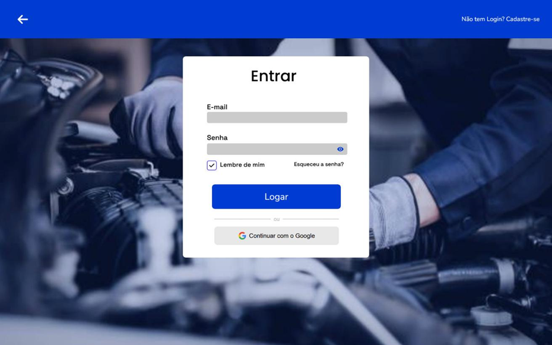

Matéria ministrada por: Jefferson Antonio Ribeiro Passerini
Características:
Criar repositório: git init.
Ver status: git status.
Adicionar arquivos:
Registrar alterações (commit):
Ver histórico de commits:
Antes do commit:
Adicionar remoto:
Enviar arquivos:
Baixar atualizações:
Clonar repositório:
Criar chave:
Adicionar chave no GitHub:
Criar branch:
Mudar de branch:
Enviar branch:
Mesclar branch:
Conflitos ocorrem quando dois commits alteram a mesma linha.
Resolver manualmente no arquivo ou usando o editor.
Após resolver, adicionar e fazer commit:
Solicitação de revisão de código antes do merge.
Fluxo:
Fork: cópia do projeto para sua conta.
Após o fork:
O dono do projeto revisa e decide aceitar ou não.
O sistema tem como objetivo facilitar a gestão de ordens de serviço, veículos, clientes, agendamentos e estoque, além de oferecer um portal para que os clientes acompanhem o histórico, relatórios e o andamento dos serviços.
A plataforma foi construída com foco na organização, transparência e eficiência, buscando atender tanto às demandas operacionais da oficina quanto às expectativas dos usuários finais. Com diferentes níveis de acesso, o sistema permite que administradores, mecânicos e clientes interajam de forma segura e prática, otimizando o fluxo de informações. O uso de tecnologias web e mobile amplia o alcance da solução, tornando-a acessível de qualquer lugar e dispositivo. Apesar da crescente digitalização no setor, ainda é comum encontrar oficinas com processos manuais ou pouco automatizados, o que reforça a relevância desta proposta. Como resultado, o sistema contribui para a profissionalização do setor, melhora o relacionamento com os clientes e apoia a tomada de decisões por meio de relatórios e indicadores de desempenho.
